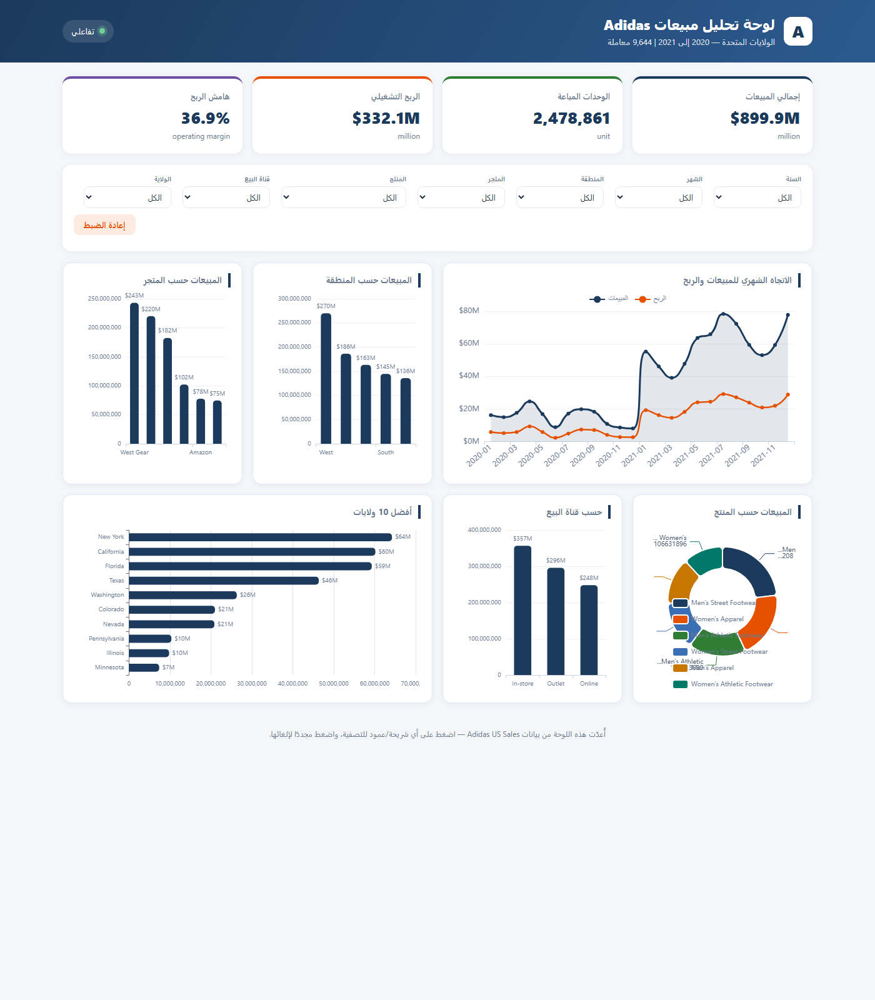

النسخة التفاعلية الحية أدناه — البيانات الكاملة، الفلاتر، والتنقاط المتبادل.
افتح اللوحة التفاعلية
واجهة عربية من اليمين إلى اليسار · فلاتر حسب المنطقة، التاجر، المنتج، القناة، السنة والشهر · انقر على أي رسم مبياني للتنقاط المتبادل.
فتح اللوحة التفاعلية ↗المهمة
- ✓تنظيف وتحليل ملف بيانات مبيعات (بيانات المبيعات بالتجزئة في الولايات المتحدة).
- ✓إعداد رؤى وتوصيات واضحة بلغة أعمال.
- ✓تسليم لوحة Excel احترافية مع جداول تحليل مرجعي.
- ✓يفضّل العميل استخدام Power Query لتحويل البيانات.
ما تم تسليمه
- ✓دفتر نظيف: 9,644 معاملة، إزالة صفوف المرتجعات الصفرية، إضافة رقم صف فريد.
- ✓Excel مع 5 جداول تحليل مرجعي حقيقية + رسوم بيانية (التاجر، المنطقة، المنتج، الطريقة، الاتجاه الشهري).
- ✓سكربت Power Query (M) لإعادة تشغيل التنظيف تلقائياً على بيانات جديدة.
- ✓تقرير الرؤى: مبيعات بقيمة 899.9 مليون دولار، هامش ربح 36.9%، المنطقة الغربية في المقدمة، الأعلى ربحاً عبر الإنترنت.
- ✓لوحة تفاعلية عربية من اليمين إلى اليسار — 6 رسوم بيانية، فلاتر تفاعلية حية، تعمل على الهاتف.
نتائج التحليل
كانت مبيعات 2021 (718 مليون دولار) تقريباً 4 أضعاف مبيعات 2020 (182 مليون دولار)، مع ارتفاع الهامش أيضاً إلى 37.4% — نمو كان أكبر وأكثر ربحية. المنطقة الغربية تتصدر بـ 270 مليون دولار، وWest Gear مع Foot Locker معاً يمثلان 51% من الإيرادات.
الحذاء الرياضي للرجال هو أعلى منتج (209 مليون دولار)، وقناة الإنترنت هي الأعلى هامش ربحاً (39%). منطقة الوسط الغربي هي الأضعف — وهي الفرصة الأوضح للنمو.
اللوحة تتيح لك التحقق من كل هذه النتائج بنفسك: اختر أي منطقة، متجر، منتج أو قناة ويُحدَّث كل رسم بياني فوراً.
عينات المعرض
- ✓عينة مبيعات مطعم — 3 أشهر، 16 صنف، إيرادات يومية وهامش ربح.
- ✓عينة عمليات مقهى — 3 أشهر، 19 صنف، جرد مع نقاط إعادة الطلب.
- ✓نفس آليات التنظيف والتحليل المرجعي على بيانات أعمال حقيقية.
التقنيات المستخدمة
- ✓تنظيف البيانات والتجميع — Python / openpyxl.
- ✓دفاتر التحليل المرجعي في Excel — أتمتة Excel الأصلية.
- ✓الرسوم البيانية التفاعلية — ECharts (مضمن محلياً، بدون CDN).
- ✓استضافة على Vercel مع فحوصات جودة.
هل تحتاج الشيء نفسه لبياناتك؟
أرسل ملفك — ستحصل على خطة واضحة، عرض أسعار احترافي ولوحة تفاعلية يمكنك مشاركتها.